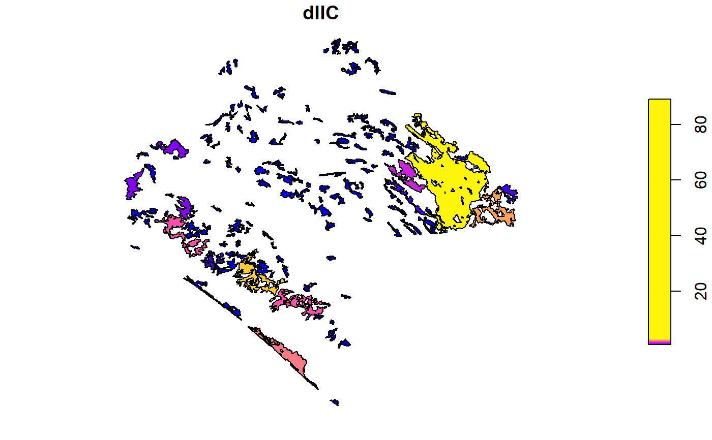
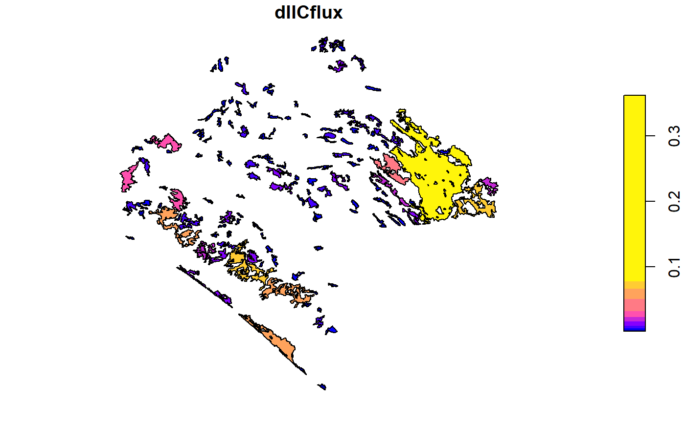
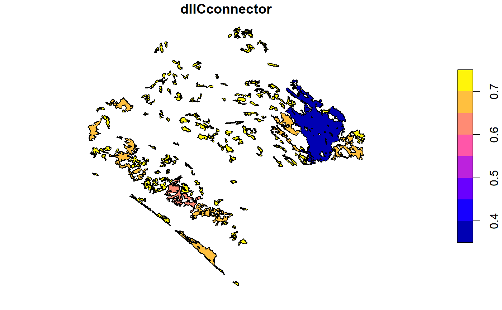

R/MK_dIICPC.R
MK_dPCIIC.RdUse this function to calculate the PC and IIC indexes under one or several distance thresholds.
MK_dPCIIC( nodes, attribute = NULL, area_unit = "ha", restauration = NULL, distance = list(type = "centroid", resistance = NULL), metric = c("IIC", "PC"), probability = NULL, distance_thresholds = NULL, overall = FALSE, onlyoverall = FALSE, LA = NULL, rasterparallel = FALSE, write = NULL )
| nodes | Object of class sf, SpatialPolygonsDataFrame, raster or data frame. If spatial layer, then it must be in a projected coordinate system. If nodes is a raster layer then raster values (Integer) will be taken as "id". If nodes is a data frame, then it must have at least two columns, first column with nodes "id" and second with the attribut. If you use the restoration argument, then you must have a dataframe with three columns where the third column is equal the restauration values |
|---|---|
| attribute | character or vector. If nodes is a shappefile then you must specify the column name with the attribute selected for the nodes. If nodes is a raster layer then it must be a numeric vector with the node's attribute. The length of the vector must be equal to the number of nodes. The numeric vector is multiplied by the area of each node to obtain a weighted habitat index. If NULL the node area will be used as a node attribute, the unit area can be selected using the "area_unit" argument. If nodes is a data frame then it must have two columns where second column is the attribute. |
| area_unit | character. If attribute is NULL you can set an area unit (e.g., "km2", "cm2", "ha"; see Makurhini::unit_convert). Default equal to hectares "ha". |
| restauration | character or vector. If nodes is a shappefile then you must specify the name of the column with restauration value. If nodes is a raster layer then must be a numeric vector with restauration values to each node in the raster. Binary values (0,1), where 1 = existing nodes in the landscape, and 0 = a new node to add to the initial landscape (restored). If nodes is a data frame then it must have three columns where third column has restauration values. |
| distance | list or distance matrix. If it is a list, then it must be a set of distance parameters. For example: type, resistance,or keep. For "type" choose one of the distances: "centroid" (faster), "edge", "hausdorff-edge", "least-cost" or "commute-time". If the type is equal to "least-cost" or "commute-time", then you have to use the "resistance" argument. To see more arguments see the ?distancefile. If it is a distance matrix, then the number of columns and rows must be equal the number of nodes and "id". |
| metric | character. Choose a connectivity metric: "IIC" considering topologycal distances or "PC" considering maximum product probabilities. |
| probability | numeric. Connection probability to the selected distance threshold, e.g., 0.5 that is 50 percentage of probability connection. Use in case of selecting the "PC" metric. If probability = NULL, then it will be the inverse of the mean dispersal distance for the species (1/α; Hanski and Ovaskainen 2000). |
| distance_thresholds | numeric. Distance or distances thresholds to establish connections (meters). For example, one distance: distance_threshold = 30000; two or more specific distances: distance_thresholds = c(30000, 50000); sequence distances: distance_thresholds = seq(10000,100000, 10000). |
| overall | logical. If TRUE, then the EC index will be added to the result which is transformed into a list. Default equal to FALSE |
| onlyoverall | logical. If TRUE, then only overall metrics will be calculated. |
| LA | numeric. Maximum landscape attribute (attribute unit, if attribute is NULL then unit is equal to ha). |
| rasterparallel | logical. If nodes is "raster" then you can use this argument to assign the metrics values to the nodes raster. It is useful when raster resolution is less than 100 m2. |
| write | character. Write output shapefile and overall table (if TRUE overall argument). It is necessary to specify the "Folder direction" + "Initial prefix", for example, "C:/ejemplo". |
Saura, S. & Torné, J. 2012. Conefor 2.6 user manual (May 2012). Universidad Politécnica de Madrid. Available at www.conefor.org.
Pascual-Hortal, L. & Saura, S. 2006. Comparison and development of new graph-based landscape connectivity indices: towards the priorization of habitat patches and corridors for conservation. Landscape Ecology 21 (7): 959-967.
Saura, S. & Pascual-Hortal, L. 2007. A new habitat availability index to integrate connectivity in landscape conservation planning: comparison with existing indices and application to a case study. Landscape and Urban Planning 83 (2-3): 91-103.
Hanski, I. and Ovaskainen, O. 2000. The metapopulation capacity of a fragmented landscape. Nature 404: 755–758.
library(Makurhini) data("vegetation_patches", package = "Makurhini") nrow(vegetation_patches) # Number of patches#> [1] 142#Two distance threshold, IIC <- MK_dPCIIC(nodes = vegetation_patches, attribute = NULL, distance = list(type = "centroid"), metric = "IIC", distance_thresholds = c(5000, 10000)) # 5 and 10 km IIC#> $d5000 #> Simple feature collection with 142 features and 5 fields #> geometry type: POLYGON #> dimension: XY #> bbox: xmin: 3340120 ymin: 322869.6 xmax: 3739484 ymax: 696540.5 #> CRS: +proj=lcc +lat_1=17.5 +lat_2=29.5 +lat_0=12 +lon_0=-102 +x_0=2500000 +y_0=0 +datum=WGS84 +units=m +no_defs #> # A tibble: 142 x 6 #> id dIIC dIICintra dIICflux dIICconnector geometry #> <int> <dbl> <dbl> <dbl> <dbl> <POLYGON [m]> #> 1 1 89.2 88.5 0.362 0.360 ((3676911 589967.3, 3676931 58~ #> 2 2 0.741 0.0182 0.00770 0.715 ((3558044 696202.5, 3557972 69~ #> 3 3 0.735 0.0120 0.00626 0.717 ((3569169 687776.4, 3569146 68~ #> 4 4 0.724 0.00116 0.00195 0.721 ((3547317 685713.2, 3547363 68~ #> 5 5 0.728 0.00557 0.00427 0.719 ((3567471 684357.4, 3567380 68~ #> 6 6 0.737 0.0142 0.00680 0.716 ((3590569 672451.7, 3590090 67~ #> 7 7 0.758 0.0353 0.0107 0.712 ((3570789 670959.4, 3570860 67~ #> 8 8 0.724 0.00152 0.00223 0.721 ((3440118 666273.2, 3440372 66~ #> 9 9 0.725 0.00164 0.00231 0.721 ((3451637 671232.4, 3451616 67~ #> 10 10 0.730 0.00664 0.00466 0.718 ((3444396 671675.7, 3444715 67~ #> # ... with 132 more rows #> #> $d10000 #> Simple feature collection with 142 features and 5 fields #> geometry type: POLYGON #> dimension: XY #> bbox: xmin: 3340120 ymin: 322869.6 xmax: 3739484 ymax: 696540.5 #> CRS: +proj=lcc +lat_1=17.5 +lat_2=29.5 +lat_0=12 +lon_0=-102 +x_0=2500000 +y_0=0 +datum=WGS84 +units=m +no_defs #> # A tibble: 142 x 6 #> id dIIC dIICintra dIICflux dIICconnector geometry #> <int> <dbl> <dbl> <dbl> <dbl> <POLYGON [m]> #> 1 1 88.8 88.1 0.360 0.357 ((3676911 589967.3, 3676931 58~ #> 2 2 0.736 0.0181 0.00766 0.710 ((3558044 696202.5, 3557972 69~ #> 3 3 0.738 0.0119 0.0143 0.712 ((3569169 687776.4, 3569146 68~ #> 4 4 0.719 0.00115 0.00194 0.716 ((3547317 685713.2, 3547363 68~ #> 5 5 0.732 0.00554 0.0124 0.714 ((3567471 684357.4, 3567380 68~ #> 6 6 0.732 0.0141 0.00677 0.711 ((3590569 672451.7, 3590090 67~ #> 7 7 0.753 0.0352 0.0106 0.707 ((3570789 670959.4, 3570860 67~ #> 8 8 0.724 0.00151 0.00642 0.716 ((3440118 666273.2, 3440372 66~ #> 9 9 0.724 0.00163 0.00662 0.716 ((3451637 671232.4, 3451616 67~ #> 10 10 0.732 0.00660 0.0111 0.714 ((3444396 671675.7, 3444715 67~ #> # ... with 132 more rows #>#Using raster data("raster_vegetation_patches", package = "Makurhini") PC <- MK_dPCIIC(nodes = raster_vegetation_patches, attribute = NULL, distance = list(type = "centroid"), metric = "PC", probability = 0.5, overall = TRUE, distance_thresholds = 40000) # 40 km PC#> $node_importances_d40000 #> class : RasterStack #> dimensions : 2491, 2662, 6631042, 5 (nrow, ncol, ncell, nlayers) #> resolution : 150, 150 (x, y) #> extent : 3340120, 3739420, 322890.5, 696540.5 (xmin, xmax, ymin, ymax) #> crs : +proj=lcc +lat_1=17.5 +lat_2=29.5 +lat_0=12 +lon_0=-102 +x_0=2500000 +y_0=0 +datum=WGS84 +units=m +no_defs #> names : Id, dPC, dPCintra, dPCflux, dPCconnector #> min values : 1.000000000, 0.053419856, 0.000272601, 0.053131349, 0.000000000 #> max values : 1.420000e+02, 6.873272e+01, 4.639073e+01, 2.234199e+01, 8.326673e-15 #> #> #> $overall_d40000 #> Index Value #> 1: PCnum 3.794150e+11 #> 2: EC(PC) 6.159667e+05 #>